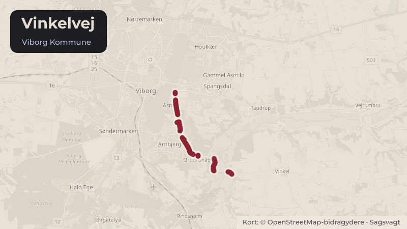

Besluttet 21. oktober, Teknisk Udvalg, Viborg
Klosterskovens fremtidige pleje
Køber af ejendommen Vinkelvej 20 har henvendt sig til Viborg Kommune med ønske om at etablere og vedligeholde lyskorridorer/udsigtskiler gennem den kommunale Klosterskov for at opnå udsigt til Søndersø.
Steder i sagen: Vinkelvej · Søndersø

Kort fortalt
- Forslaget
- Udvalget tager stilling til, om der skal arbejdes videre med ændret pleje og udtynding
- Hvem
- Teknisk Udvalg, Viborg Kommune
- Hvornår
- Onsdag 21. oktober 2026
- Status
- Besluttet. Teknisk Udvalg besluttede, 1. at udvalget til kommende møde forelægges oplæg om udtynding af vildnis og opstamning af enkelte træer. Fældning af træer skal som udgangspunkt undgås også i udsigtskilen.Beslutningen er forkortet her. Læs hele beslutningen
Læs hele sagen Kommunens egen tekst
Indstilling
Direktøren for Teknik & Miljø indstiller til Teknisk Udvalg,
1. at udvalget tager stilling til, om der skal arbejdes videre med ændret pleje og udtynding
i Klosterskoven med henblik for forbedring af udsigtsforholdene fra Vinkelvej 20.
Sagsfremstilling
Historik
Byrådet besluttede den 12. november 2025 at sælge ejendommen Vinkelvej 20 til Thorgruppen
(link til sag nr. 16 i byrådet den 12. november 2025). Den betingede grundkøbsaftale er bl.a.
betinget af, at der sker endelig vedtagelse af en lokalplan for ejendommen.
Byrådet har den 2. september 2026 at vedtage forslag til lokalplan nr. 663 til offentlig høring
(Link til sag nr. 8 på møde den 2. september 2026) . Lokalplanforslaget har været i offentlig
høring indtil den 8. oktober og forventes forelagt til endelig vedtagelse ultimo 2026.
Inddragelse og høring
Intet.
Beskrivelse
Viborg Kommune ejer Klosterskoven mellem Vinkelvej 20 og Søndersø. I forbindelse med køb
af den tidligere handelsskole på Vinkelvej 20 har køber fremsat ønske om at åbne skoven mod
søen gennem ændret pleje og udtynding for at udsigtsforholdene. Køber (herefter ”ansøger”)
har indsendt ansøgning om ændret pleje og udtynding som ses i bilag 1.
Vinkelvej 20 – den tidligere handelsskole – er solgt til Thorgruppen og der har været en
lokalplan i høring, der udlægger ejendommen til bl.a. boliger.
Der er tidligere meddelt dispensation til en større rydningskile, som i dag er vokset til.
Genetablering af rydningskilen vil give udsigt og åbne området mod søen. Det kan der gives
tilladelse til. Skovens nuværende udbredelse fremgår af luftfoto fra 2025 (bilag 2).
Rydningskilen ses på luftfoto fra 2004 (bilag 3).
Klosterskoven ligger på østsiden af Søndersø, og er kendetegnet ved et kuperet og flere
steder vådt terræn med mange ældre træer, en naturligt udviklet underskov og betydelige
naturværdier. Skoven forvaltes i dag med fokus på biodiversitet og naturlige processer og
fremstår som en af kommunens mest uberørte skove. Klosterskoven ligger i tilknytning til den
mest benyttede stirute (Søndersøstien) i Viborg Kommune, og det sammenhængende
skovstykke langs den østlige side af Søndersø har stor værdi som bynær natur.
Ansøger har indsendt en ansøgning om gennemførsel af ændret pleje, som blandt andet
foreslår udtynding af træer, rydning af undervækst og etablering af lyskorridorer (udsigtskiler)
mod søen med henblik på at skabe et mere åbent skovbillede og forbedrede udsigtsforhold.
Der er i ansøgningen ikke vedlagt visualiseringer eller på anden måde illustreret hvordan den
ændrede pleje vil ændre skovens karakter samt udsigtsforholdene til/fra Vinkelvej 20.
Klosterskoven har betydelige natur- og landskabsværdier og er en af kommunens mest
uberørte skove. Forvaltningen vurderer, at de foreslåede tiltag vil ændre skovens karakter
væsentligt og reducere de natur- og landskabsværdier, der knytter sig til den tætte
skovbevoksning langs Søndersø.
På den anden side er det en skov, der ligger i byzone, og hvor den ændrede anvendelse af
den nærliggende ejendom til boligformål kan tale for, at skoven får et mere bymæssigt udtryk
(park), der kan fremme visuel sammenhæng mellem boligerne og Viborg midtby.
På baggrund af ovenstående er det forvaltningens samlede anbefaling, at den tidligere
rydningskile genetableres, men at skoven i øvrigt fortsat forvaltes ud fra de eksisterende
naturmæssige mål.
Udvalget skal tage stilling til, om ønsket om ændret pleje og udtynding med henblik på
forbedring af udsigtsforholdene skal imødekommes helt eller delvist, eller om den nuværende
forvaltning af Klosterskoven skal fastholdes.
Ansøger er indstillet på selv at gennemføre og også at afholde omkostningerne til
gennemførelse af den foreslåede pleje og udtynding. Forvaltningen anbefaler, at kommunen
fastholder ansvaret for drift og pleje af arealet, uanset om der træffes beslutning om en ændret
pleje, da der er tale om et kommunalt ejet skovareal. Det anbefales samtidig, at ansøger og
fremtidige ejere af Vinkelvej 20 afholder de merudgifter, der måtte følge af den ændrede pleje.
Alternativer
Intet.
Tidsperspektiv
Intet.
Økonomiske forhold og konsekvenser
Eventuel etablering og efterfølgende vedligeholdelse af forbedrede udsigtsforhold vil medføre
øgede udgifter til drift og pleje af skovarealet.
Juridiske og planmæssige forhold
Klosterskoven er fredskovspligtig og Miljøstyrelsen har kortlagt ”skoven” som § 25 skov –
Naturmæssigt særlig værdifuld skov på offentlige arealer.
Eventuelle indgreb og ændret pleje skal ske inden for rammerne af gældende lovgivning og
under hensyntagen til områdets naturværdier.
Beslutning
Teknisk Udvalg besluttede,
1. at udvalget til kommende møde forelægges oplæg om udtynding af vildnis og
opstamning af enkelte træer. Fældning af træer skal som udgangspunkt undgås også i
udsigtskilen.
Aksel Rosager Johansen (Ø) var fraværende
Kilde: Viborg Kommune, Teknisk Udvalg, referat fra mødet onsdag 21. oktober 2026, punkt 11. Læs den originale sag hos kommunen.